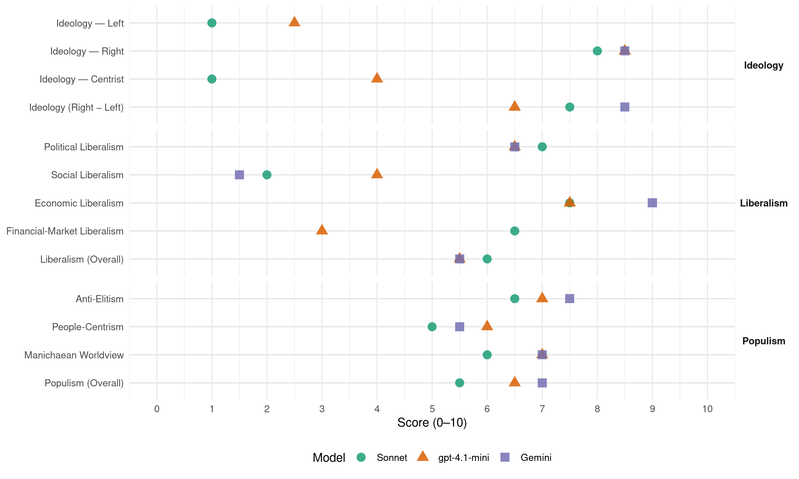

(Portugal, 2019)
manifesto_id 35720_201910
Get full text: This site shows derived annotations and short verbatim quotes only. The full manifesto text is © Manifesto Project / WZB — obtain it via manifesto-project.wzb.eu using the manifesto_id above.
Headline scores
| Dimension | Sonnet | gpt-4.1-mini | Gemini |
|---|---|---|---|
| Populism (Overall) | 5.5 | 6.5 | 7.0 |
| Anti-Elitism | 6.5 | 7.0 | 7.5 |
| People-Centrism | 5.0 | 6.0 | 5.5 |
| Manichaean Worldview | 6.0 | 7.0 | 7.0 |
| Ideology (Right − Left) | 7.5 | 6.5 | 8.5 |
| Liberalism (Overall) | 6.0 | 5.5 | 5.5 |
| Political Liberalism | 7.0 | 6.5 | 6.5 |
| Social Liberalism | 2.0 | 4.0 | 1.5 |
| Economic Liberalism | 7.5 | 7.5 | 9.0 |
| Financial-Market Liberalism | 6.5 | 3.0 | – |
Evidence per dimension
Economic Liberalism
Gemini · score 9.0 · verified · chunk 1
“liberdade económica para produzir, trocar, acumular”
liberdade de consciência e religiosa, liberdade económica para produzir, trocar, acumular e consumir, liberdade para constituir
Gemini · score 9.0 · verified · chunk 2
“mercado de habitação deve ser livre”
de acordo com as políticas do Estado. O mercado de habitação deve ser livre e não nacionalizado ou controlado pelo Estado
gpt-4.1-mini · score 8.0 · verified · chunk 1
“liberdade económica para produzir, trocar, acumular e consumir”
…O liberalismo assume ainda que existem algumas liberdades básicas como liberdade de pensamento e expressão, liberdade de consciência e religiosa, liberdade económica para produzir, trocar, acumular e consumir, liberdade para constituir família e liberdade de associação…
gpt-4.1-mini · score 7.0 · verified · chunk 2
“Ao Estado compete uma função arbitral e não a de concorrente com empresas privadas”
Ao Estado não compete a detenção directa ou indirecta, maioritária ou minoritária, com golden-share ou sem ela, do capital social de qualquer empresa industrial ou de serviços no âmbito primário, secundário ou terciário da economia. Ao Estado compete uma função arbitral e não a de concorrente com empresas privadas.
Sonnet · score 8.0 · verified · chunk 1
“liberdade económica para produzir, trocar, acumular e consumir”
o CHEGA assume que existem algumas liberdades básicas como liberdade de pensamento e expressão, liberdade de consciência e religiosa, liberdade económica para produzir, trocar, acumular e consumir
Sonnet · score 7.0 · verified · chunk 2
“O mercado de habitação deve ser livre”
O mercado de habitação deve ser livre e não nacionalizado ou controlado pelo Estado como a mesma Lei propõe.
Financial-Market Liberalism
gpt-4.1-mini · score 3.0 · verified · chunk 2
“Exigência da devolução de fundos obtidos irregularmente”
h)Inabilitar para cargos públicos e penalizar os modelos de gestão que aumentem a dívida de Portugal. i)Exigência da devolução de fundos obtidos irregularmente. j)Publicação de dados sobre nacionalidade e origem nas estatísticas de delitos k)Fim de subvenções públicas a fundações, sindicatos, associações patronais e organizações de proselitismo ideológico.
Sonnet · score 7.0 · verified · chunk 1
“taxa única de IRS”
Aplicação de taxas de uma forma simplificada (como a existência de uma taxa única de IRS); Essa taxa será de 15% no primeiro ano da Legislatura; de 13,5% no segundo ano
Sonnet · score 6.0 · verified · chunk 2
“branqueamento de capitais, de associação criminosa”
mecanismos de ‘Plea Bargaining’, em crimes de corrupção, de branqueamento de capitais, de associação criminosa, e outros de criminalidade económica
Political Liberalism
Gemini · score 8.0 · verified · chunk 1
“Democracia representativa, no primado do Estado”
valores da Liberdade e da Democracia representativa, no primado do Estado de Direito, na limitação da intervenção
Gemini · score 5.0 · verified · chunk 2
“Reforma do Sistema Judiciário para uma independência”
magistrados do Ministério Público e dos Magistrados Judiciais Reforma do Sistema Judiciário para uma independência real do poder político.
gpt-4.1-mini · score 9.0 · verified · chunk 1
“no primado do Estado de Direito, na limitação da intervenção do Estado e na separação de poderes”
…o CHEGA é um Partido Conservador que defende uma visão do mundo e da vida assente nos valores da Liberdade e da Democracia representativa, no primado do Estado de Direito, na limitação da intervenção do Estado e na separação de poderes…
gpt-4.1-mini · score 4.0 · verified · chunk 2
“Reforçar a independência do Ministério Público, em directa articulação com a Polícia Judiciária”
b)Reforçar a independência do Ministério Público, em directa articulação com a Polícia Judiciária como órgão de investigação criminal por excelência. c)Transferir a competência de estabelecer as prioridades de investigação criminal do Governo para a maioria qualificada da Assembleia da República.
Sonnet · score 7.0 · verified · chunk 1
“primado do Estado de Direito, na limitação da intervenção do Estado e na separação de poderes”
o CHEGA é um Partido Conservador que defende uma visão do mundo e da vida assente nos valores da Liberdade e da Democracia representativa, no primado do Estado de Direito, na limitação da intervenção do Estado e na separação de poderes
Sonnet · score 5.0 · mixed · chunk 2
“independência real do poder político”
Reforma do Sistema Judiciário para uma independência real do poder político. Todos os membros do Supremo Tribunal deverão ser eleitos por concurso de mérito
Liberalism (Overall)
Gemini · score 6.0 · verified · chunk 1
“valores da Liberdade e da Democracia representativa”
valores da Liberdade e da Democracia representativa, no primado do Estado de Direito, na limitação da intervenção
Gemini · score 5.0 · verified · chunk 2
“mercado de habitação deve ser livre”
de acordo com as políticas do Estado. O mercado de habitação deve ser livre e não nacionalizado ou controlado pelo Estado
gpt-4.1-mini · score 7.0 · verified · chunk 1
“no primado do Estado de Direito, na limitação da intervenção do Estado e na separação de poderes”
…o CHEGA é um Partido Conservador que defende uma visão do mundo e da vida assente nos valores da Liberdade e da Democracia representativa, no primado do Estado de Direito, na limitação da intervenção do Estado e na separação de poderes…
gpt-4.1-mini · score 4.0 · verified · chunk 2
“Ao Estado compete uma função arbitral e não a de concorrente com empresas privadas”
Ao Estado não compete a detenção directa ou indirecta, maioritária ou minoritária, com golden-share ou sem ela, do capital social de qualquer empresa industrial ou de serviços no âmbito primário, secundário ou terciário da economia. Ao Estado compete uma função arbitral e não a de concorrente com empresas privadas.
Sonnet · score 6.0 · verified · chunk 1
“Liberdade, Mercados Livres, Tradição e Autoridade”
Edmund Burke e Roger Scruton e as suas reflexões sobre a interconexão entre “Liberdade, Mercados Livres, Tradição e Autoridade”
Sonnet · score 5.0 · mixed · chunk 2
“conservadores liberais que somos”
Ao Estado compete, como o entendem os conservadores liberais que somos, funcionar como entidade arbitral, reguladora e, no limite, supletiva
Anti-Elitism
Gemini · score 8.0 · verified · chunk 1
“autodenominadas “elites” ou “van-guardas”, e é execrável”
abominável, ou pela minoria, pela oligarquia ou autodenominadas “elites” ou “van-guardas”, e é execrável. (…) Por outro lado
Gemini · score 7.0 · verified · chunk 2
“interesses de oligarquias, caciques, lobbies”
Anteposição das necessidades de Portugal e dos portugueses aos interesses de oligarquias, caciques, lobbies ou organizações supranacionais
gpt-4.1-mini · score 7.0 · verified · chunk 1
“pelo”povo”, e é abominável, ou pela minoria, pela oligarquia ou autodenominadas “elites” ou “van-guardas”, e é execrável”
…poder sem razão que pode ser exercido pelo Estado e é detestável. Que pode ser exercido pela maioria, pelo “povo”, e é abominável, ou pela minoria, pela oligarquia ou autodenominadas “elites” ou “van-guardas”, e é execrável. (…) Por outro lado, também é necessária a convicção de que nem tudo é completamente aleatório no mundo…
gpt-4.1-mini · score 7.0 · verified · chunk 2
“Anteposição das necessidades de Portugal e dos portugueses aos interesses de oligarquias, caciques, lobbies ou organizações supranacionais”
Fim de subvenções públicas a fundações, sindicatos, associações patronais e organizações de proselitismo ideológico. Excluem-se os partidos legalmente constituídos l)Anteposição das necessidades de Portugal e dos portugueses aos interesses de oligarquias, caciques, lobbies ou organizações supranacionais 3.3.MIGRAÇÕES A presença em Portugal desta nova vaga de imigrantes é já significativa, cerca de 70.00 concentrados no concelho de Sintra.
Sonnet · score 7.0 · verified · chunk 1
“pela oligarquia ou autodenominadas”elites” ou “van-guardas”, e é execrável”
Que pode ser exercido pela maioria, pelo “povo”, e é abominável, ou pela minoria, pela oligarquia ou autodenominadas “elites” ou “van-guardas”, e é execrável.
Sonnet · score 6.0 · verified · chunk 2
“interesses de oligarquias, caciques, lobbies ou organizações supranacionais”
Anteposição das necessidades de Portugal e dos portugueses aos interesses de oligarquias, caciques, lobbies ou organizações supranacionais
Ideology — Centrist
gpt-4.1-mini · score 4.0 · verified · chunk 2
“A preferência pelos contactos bilaterais em detrimento das relações multilaterais”
O CHEGA assume como seus princípios de base no campo da política externa: A preferência pelos contactos bilaterais em detrimento das relações multilaterais. Entre outras razões porque estas últimas primam pelo adiar dos problemas e nunca pela sua solução, um adiamento que, na esmagadora maioria das vezes está longe de ser inocente.
Sonnet · score 1.0 · verified · chunk 1
“conservadorismo de feição liberal, democrática e pluralista”
Defende, assim, o CHEGA um conservadorismo de feição liberal, democrática e pluralista, empenhado na defesa da ordem espontânea
Sonnet · score 1.0 · verified · chunk 2
“Pertencendo o CHEGA a este segundo grupo”
Pertencendo o CHEGA a este segundo grupo, será seu objectivo estratégico no âmbito da política externa manter relações privilegiadas com os partidos congéneres
Ideology — Left
gpt-4.1-mini · score 2.0 · verified · chunk 1
“a Constituição da República votada pela esquerda e aprovada num contexto histórico-político resultante de uma revolução, só poderá servir programas de partidos políticos necessariamente de esquerda”
…A Constituição da República votada pela esquerda e aprovada num contexto histórico-político resultante de uma revolução, só poderá servir programas de partidos políticos necessariamente de esquerda, pelo que qualquer partido de direita, ou de pendor não socialista, se verá impossibilitado de governar segundo os seus próprios princípios…
gpt-4.1-mini · score 3.0 · verified · chunk 2
“Fim de subvenções públicas a fundações, sindicatos, associações patronais e organizações de proselitismo ideológico”
Fim de subvenções públicas a fundações, sindicatos, associações patronais e organizações de proselitismo ideológico. Excluem-se os partidos legalmente constituídos l)Anteposição das necessidades de Portugal e dos portugueses aos interesses de oligarquias, caciques, lobbies ou organizações supranacionais 3.3.MIGRAÇÕES A presença em Portugal desta nova vaga de imigrantes é já significativa, cerca de 70.00 concentrados no concelho de Sintra.
Sonnet · score 1.0 · verified · chunk 1
“marxismo cultural é hoje dominante em franjas estreitas”
o marxismo-gramscismo, ou marxismo cultural é hoje dominante em franjas estreitas, mas decisivas pela influência detida no mundo académico, das Artes e das Letras
Sonnet · score 1.0 · verified · chunk 2
“não cabe, pois, ao Estado ser o ‘dono’ na Economia, como o entendem os comunistas”
Não cabe, pois, ao Estado ser o ‘dono’ na Economia, como o entendem os comunistas; nem motor da Economia, como o entendem os socialistas
Ideology (Right − Left)
Gemini · score 8.0 · verified · chunk 1
“Direita moderna euro-americana escolhe por lema”
velha Direita jacobina, a Direita moderna euro-americana escolhe por lema Liberdade, Solidariedade, Diferença
Gemini · score 9.0 · verified · chunk 2
“valores da Direita identitária, a Nova Direita”
irrenunciável. São os valores da Direita identitária, a Nova Direita que se opõe radicalmente à Esquerda globalista.
gpt-4.1-mini · score 6.0 · verified · chunk 1
“Defende, assim, o CHEGA um conservadorismo de feição liberal, democrática e pluralista”
…Defende, assim, o CHEGA um conservadorismo de feição liberal, democrática e pluralista, empenhado na defesa da ordem espontânea e que promova o progresso, orgânico, ordenado e pacífico, no primado das incondicionais liberdades políticas, económicas e cívicas…
gpt-4.1-mini · score 7.0 · verified · chunk 2
“Proibição da propaganda da agenda LGBTI no sistema de ensino”
d)A outorga de uma cobertura legal e definitiva ao impedimento decidido pelos Pais e/ou Encarregados de educação, da frequência de aulas que atentem contra os princípios e valores morais e religiosos que perfilham, quer no sistema oficial de ensino quer em qualquer outro. e)A proibição da propaganda da agenda LGBTI no sistema de ensino. f)O Estado proporcionará uma protecção especial à infância.
Sonnet · score 7.0 · verified · chunk 1
“Direita moderna euro-americana escolhe por lema Liberdade, Solidariedade, Diferença”
Contra a Esquerda e contra a velha Direita jacobina, a Direita moderna euro-americana escolhe por lema Liberdade, Solidariedade, Diferença.
Sonnet · score 8.0 · verified · chunk 2
“Nova Direita que se opõe radicalmente à Esquerda globalista”
São os valores da Direita identitária, a Nova Direita que se opõe radicalmente à Esquerda globalista
Ideology — Right
Gemini · score 8.0 · verified · chunk 1
“Direita moderna euro-americana escolhe por lema”
velha Direita jacobina, a Direita moderna euro-americana escolhe por lema Liberdade, Solidariedade, Diferença
Gemini · score 9.0 · verified · chunk 2
“valores da Direita identitária, a Nova Direita”
irrenunciável. São os valores da Direita identitária, a Nova Direita que se opõe radicalmente à Esquerda globalista.
gpt-4.1-mini · score 8.0 · verified · chunk 1
“Defende, assim, o CHEGA um conservadorismo de feição liberal, democrática e pluralista”
…Defende, assim, o CHEGA um conservadorismo de feição liberal, democrática e pluralista, empenhado na defesa da ordem espontânea e que promova o progresso, orgânico, ordenado e pacífico, no primado das incondicionais liberdades políticas, económicas e cívicas…
gpt-4.1-mini · score 9.0 · verified · chunk 2
“Proibição da propaganda da agenda LGBTI no sistema de ensino”
d)A outorga de uma cobertura legal e definitiva ao impedimento decidido pelos Pais e/ou Encarregados de educação, da frequência de aulas que atentem contra os princípios e valores morais e religiosos que perfilham, quer no sistema oficial de ensino quer em qualquer outro. e)A proibição da propaganda da agenda LGBTI no sistema de ensino. f)O Estado proporcionará uma protecção especial à infância.
Sonnet · score 8.0 · verified · chunk 1
“identidade cultural própria definida por um determinado conjunto de valores, costumes e tradições”
numa sociedade historicamente construída ao longo de séculos, com uma identidade cultural própria definida por um determinado conjunto de valores, costumes e tradições
Sonnet · score 8.0 · verified · chunk 2
“defesa dos valores tipicamente conservadores”
tendo, como denominador comum a defesa dos valores tipicamente conservadores, entre os quais o reforço da família, das comunidades naturais e da Nação
Manichaean Worldview
Gemini · score 7.0 · verified · chunk 1
“asfixiante sistema de extorsão montado”
O CHEGA não descansará enquanto não puser fim ao asfixiante sistema de extorsão montado em Portugal, como em outros países
Gemini · score 7.0 · verified · chunk 2
“Do outro lado da barricada”
várias esquerdas retintamente marxistas. Do outro lado da barricada e num crescente movimento de repúdio pela avançada
gpt-4.1-mini · score 6.0 · verified · chunk 1
“contra a arbitrariedade, o uso e o abuso do poder, o might without right acima referido”
…sob o Império da Lei, contra a arbitrariedade, o uso e o abuso do poder, o might without right acima referido, ou seja, contra todas as formas de totalitarismo e “tiranias suaves”, que Alexis de Tocqueville tão bem caracterizou. Defende, assim, o CHEGA um conservadorismo de feição liberal…
gpt-4.1-mini · score 8.0 · verified · chunk 2
“uma massa indiferenciada de indivíduos sem raizes, sem família, sem comunidades próximas e sem nação”
São duas ideologias em confronto: aquela que propõe e que tenta implantar um mundo sem fronteiras habitado por uma massa indiferenciada de indivíduos sem raizes, sem família, sem comunidades próximas e sem nação, o consumidor ideal porque completamente desprovido de defesas.
Sonnet · score 6.0 · verified · chunk 1
“asfixiante sistema de extorsão montado em Portugal”
O CHEGA não descansará enquanto não puser fim ao asfixiante sistema de extorsão montado em Portugal, como em outros países, para drenar quase todo o poder da esfera dos cidadãos
Sonnet · score 6.0 · verified · chunk 2
“São duas ideologias em confronto”
Passado o tempo ilusório da morte das ideologias, chegou o tempo em que a sua relevância renasce e com mais força do que nunca.. São duas ideologias em confronto: aquela que propõe e que tenta implantar um mundo sem fronteiras
People-Centrism
Gemini · score 5.0 · verified · chunk 1
“exercido pela maioria, pelo “povo””
Estado e é detestável. Que pode ser exercido pela maioria, pelo “povo”, e é abominável, ou pela minoria
Gemini · score 6.0 · verified · chunk 2
“necessidades de Portugal e dos portugueses”
Anteposição das necessidades de Portugal e dos portugueses aos interesses de oligarquias, caciques, lobbies
gpt-4.1-mini · score 6.0 · verified · chunk 1
“a maioria, pelo “povo”, e é abominável”
…poder sem razão que pode ser exercido pelo Estado e é detestável. Que pode ser exercido pela maioria, pelo “povo”, e é abominável, ou pela minoria, pela oligarquia ou autodenominadas “elites” ou “van-guardas”, e é execrável. (…) Por outro lado, também é necessária a convicção de que nem tudo é completamente aleatório no mundo…
gpt-4.1-mini · score 6.0 · verified · chunk 2
“Nós não somos 10 milhões de portugueses. Nós somos 15 milhões.”
5 - COMUNIDADES PORTUGUESAS Nós não somos 10 milhões de portugueses. Nós somos 15 milhões. 10 milhões de um forma ou de outra conformados com os estreitos limites que a goegrafia nos marcou e cinco milhões que se não conformaram, não desistiram, e estão hoje espalhados pela Europa e pelo Mundo.
Sonnet · score 4.0 · verified · chunk 1
“devolução, aos cidadãos, das inúmeras funções e recursos”
O CHEGA irá bater-se pela devolução, aos cidadãos, das inúmeras funções e recursos que desde o século XVIII o Estado português…tem vindo sub-repticiamente a usurpar
Sonnet · score 6.0 · verified · chunk 2
“necessidades de Portugal e dos portugueses”
Anteposição das necessidades de Portugal e dos portugueses aos interesses de oligarquias, caciques, lobbies ou organizações supranacionais
Populism (Overall)
Gemini · score 7.0 · verified · chunk 1
“asfixiante sistema de extorsão montado”
O CHEGA não descansará enquanto não puser fim ao asfixiante sistema de extorsão montado em Portugal, como em outros países
Gemini · score 7.0 · verified · chunk 2
“interesses de oligarquias, caciques, lobbies”
Anteposição das necessidades de Portugal e dos portugueses aos interesses de oligarquias, caciques, lobbies ou organizações supranacionais
gpt-4.1-mini · score 6.0 · verified · chunk 1
“pelo “povo”, e é abominável, ou pela minoria, pela oligarquia ou autodenominadas “elites””
…poder sem razão que pode ser exercido pelo Estado e é detestável. Que pode ser exercido pela maioria, pelo “povo”, e é abominável, ou pela minoria, pela oligarquia ou autodenominadas “elites” ou “van-guardas”, e é execrável. (…) Por outro lado, também é necessária a convicção de que nem tudo é completamente aleatório no mundo…
gpt-4.1-mini · score 7.0 · verified · chunk 2
“Anteposição das necessidades de Portugal e dos portugueses aos interesses de oligarquias, caciques, lobbies ou organizações supranacionais”
Fim de subvenções públicas a fundações, sindicatos, associações patronais e organizações de proselitismo ideológico. Excluem-se os partidos legalmente constituídos l)Anteposição das necessidades de Portugal e dos portugueses aos interesses de oligarquias, caciques, lobbies ou organizações supranacionais 3.3.MIGRAÇÕES A presença em Portugal desta nova vaga de imigrantes é já significativa, cerca de 70.00 concentrados no concelho de Sintra.
Sonnet · score 5.0 · verified · chunk 1
“os partidos fundadores do regime foram, apenas, aqueles a quem o establishment – de esquerda – convidou”
Os partidos fundadores do regime foram, apenas, aqueles a quem o establishment – de esquerda – convidou. Só puderam concorrer às eleições para a Assembleia Constituinte de 1975
Sonnet · score 6.0 · verified · chunk 2
“interesses de oligarquias, caciques, lobbies”
Anteposição das necessidades de Portugal e dos portugueses aos interesses de oligarquias, caciques, lobbies ou organizações supranacionais
Social Liberalism